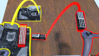

IEEE VR 2025 Workshops · 2025
Permanent Proxies for Bimanual Selection and Manipulation in VR

BibTeX
@inproceedings{yang2025permanentproxies,
title={Permanent Proxies for Bimanual Selection and Manipulation in VR},
author={Yang, Ben and Liu, Jen-Shuo and He, Xichen and Tversky, Barbara and Feiner, Steven},
booktitle={2025 IEEE Conference on Virtual Reality and 3D User Interfaces Abstracts and Workshops (VRW)},
pages={1330--1331},
year={2025},
doi={10.1109/VRW66409.2025.00311}
}